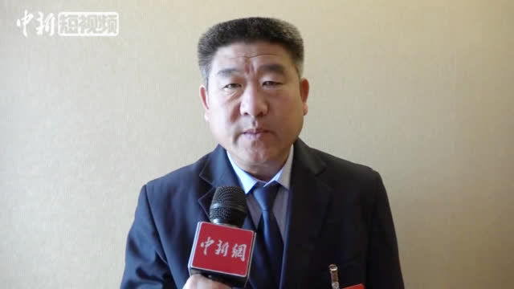

#读书# "务必要确保你愿意为自己工作，这是埃里克的一条最基本的原则，也是管理学的一条金科玉律。如果你自己都觉得员工受你这样一位上司管理是一大痛苦，那么你就得好好改进了。"这个道理也适用于婚姻和交朋友。
对温州警察好感大增//@武志红:的确这才是合格处置。//@侯虹斌:这算是合格的处置。看以前的新闻，都是警方劝男女好好过日子，不要吵架，然后就走了。@马库斯说:3月13日，浙江温州一对夫妻经过静安桥时，在争吵中的丈夫，把妻子推下桥，被附近的一位好心人救起。这一次公安局并没有按情感纠纷来处理，直接与故意杀人未遂罪，刑事拘留。为温州的当事警察点个赞我们想要什么样的社会，我们要一定要为之奋斗，在网络时代对普通人而言最简单的就是说出来，哪怕开头只能改变个别人，慢慢的个别人再去改变身边的个别人，最后让它成为整个社会民众的主体意志，到那个时候，社会总会改变，因为社会的潮流是由人民引领的。#人人多说一句话世界变得更美好# 常常为眼前的黑暗而伤心的朋友，你应该明白，当你意识到自己正处在黑暗之中的时候，就是应该开始出发寻找光明的时刻。
之前听过@水纹路 教练的建议，有翘二郎腿习惯的，可以坐在椅子上的时候，两个膝盖之间夹个小瑜伽球，用大小类似，直径20厘米的其它球也可以，亲测有效。我是只要坐下，就不自觉地翘二郎腿，发现夹个球后，就翘不起来了。---:抱歉，作者已设置仅展示半年内微博，此微博已不可见。
//@老阿姨在抗衰:张姓代表关心的男青年结婚困难问题，还是让国家给这些人，每人发个媳妇吧，一步到位解决他的提议。@头条新闻:【人大代表张青彬:子女结婚父母负债 #建议彩礼纳入婚姻法#】3月14日，全国人大代表、全国见义勇为模范张青彬表示，经过走访30多个县，五六十个村庄，200多户居民的调研，他发现农村结婚彩礼过高成为问题。在不少农村，子女婚结了，父母负债累累。他在#两会#上建议，把结婚彩礼纳入到《婚姻法》当中，让法律来定极限。中新视频的秒拍视频 1094万次播放 02:12